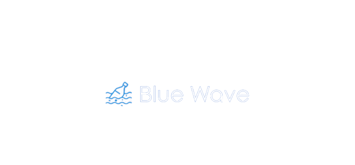
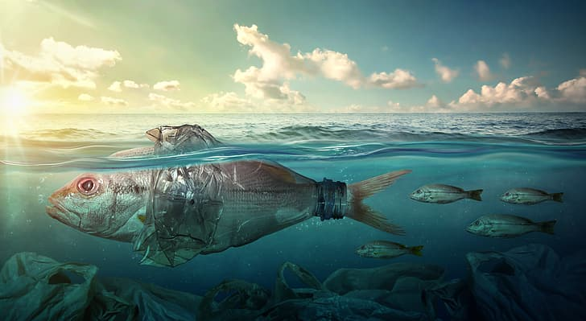

Qui sommes-nous?
L'association "Blue Wave" est une organisation à but non lucratif qui œuvre pour protéger les océans et
leur faune marine menacée. Nous sommes convaincus que la conservation de notre environnement marin est
essentielle pour la survie de notre planète et pour les générations futures.

Que faisons nous?
Notre association travaille pour sensibiliser le public à l'importance de la protection des océans et pour
encourager les gouvernements et les entreprises à adopter des pratiques plus durables pour préserver
l'environnement marin. Nous menons également des actions concrètes sur le terrain pour nettoyer les plages,
préserver les habitats marins et sauvegarder les espèces en danger.